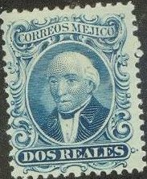
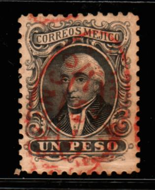
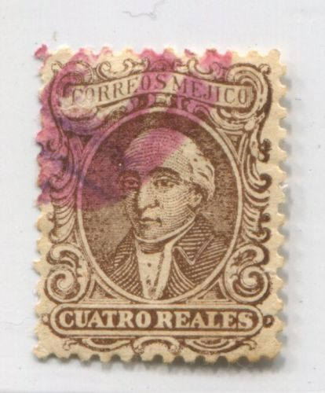
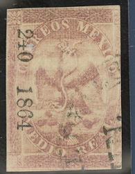
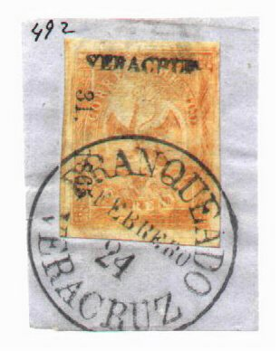
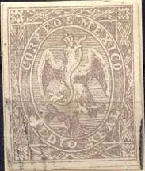
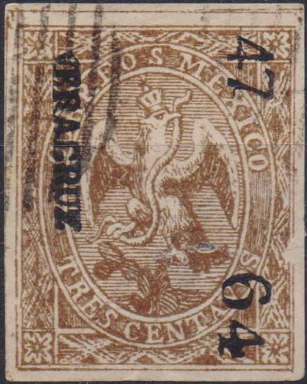
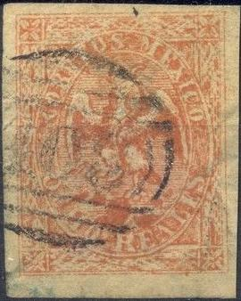
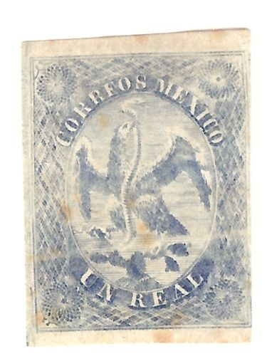

Return To Catalogue - Mexico Overview
Note: on my website many of the
pictures can not be seen! They are of course present in the
catalogue;
contact me if you want to purchase it.
For stamps of Mexico issued from 1856 to 1863, click here.


1 r red 2 r blue 4 r brown 1 P black
These stamps only seem to have served in Saltillo, Monterey and Paso del Norte. They are very rare in used condition. The perforation is 12. Many remainders exist.
Value of the stamps |
|||
vc = very common c = common * = not so common ** = uncommon |
*** = very uncommon R = rare RR = very rare RRR = extremely rare |
||
| Value | Unused | Used | Remarks |
| 1 r | * | RRR | |
| 2 r | * | RRR | |
| 4 r | * | RRR | |
| 1 P | ** | RRR | |
Genuine remainders with forged cancels exist.
Surcharged '1/2', this is a bogus issue made by Fournier, it bears the overprint "SALTILLO". Fournier used genuine stamps to create these surcharges:
The forged overprints "SALTILLO" and "1/2" as
found in 'The Fournier Album of Philatelic Forgeries'. It seems
different from the above overprints; the top part of the '/' is
slanting more downwards in the Fournier forgery.
A Senf forgery with overprint "FALSCH" (=forged in German):

This forgery is also mentioned in Album Weeds as the fourth forgery. This forgery was issued around 1905.

Forgery of the 2 r value
There are other forgeries (even engraved ones of these stamps). I think the next stamps are such engraved forgeries:
Fournier probably also offered these engraved forgeries, the following forgeries have cancels that can be found in 'The Fournier Album of Philatelic Forgeries':


"FRANCO 29 OCT 18.. MEXICO" on 1 r, "FRANCO
ADALAJA" on 2 r, and "FRANCO EN TUXILO CHICHO"
(red) on 1 P
Some of these forgeries ended up in 'The Fournier Album of
Philatelic Forgeries', in that case they have the overprint 'FAC
SIMILE' at the backside.
'FRANCO 1 FEBR 72 MORELIA' (Fournier forged cancel)
The forged Fournier cancels from 'The Fournier Album of
Philatelic Forgeries'



Other forgery of the 1 r and 4 r values. The "O"s in
"CORREOS" and "MEJICO" are too narrow.

Another forgery of the 1 r value.




(Reduced size)
3 c brown 1/2 r lilac 1 r blue 2 r red 4 r green 8 r red
Value of the stamps |
|||
vc = very common c = common * = not so common ** = uncommon |
*** = very uncommon R = rare RR = very rare RRR = extremely rare |
||
| Value | Unused | Used | Remarks |
| 3 c | RRR | RRR | 2600 stamps issued |
| 1/2 r | RR | RR | Exists in brown, lilac and grey About 160000 stamps issued |
| 1 r | RR | *** | About 700000 stamps issued |
| 2 r | R | *** | About 1.7 million stamps issued |
| 4 r | RR | RR | 227400 stamps issued |
| 8 r | RRR | RR | 94700 stamps issued |
The number of stamps printed obtained from http://www.regencystamps.com/Mexico.shtml.
An illegal reprint exists of the 3 c stamp; the letters "TRES CENTAVOS" are different according to 'The forged stamps of all counties' by J. Dorn.
These stamps exist with:
district names only (first period, 1864)
district name, invoice number and year in large figures (1864)
no overprint,
district name, invoice number and year in small figures (1864 to
1866)

(District name "LAGOS", invoice number "21.",
year "1865", cancel "LAGOS")

In the genuine stamps, the downwards pointing limb of the "X" in "MEXICO" is much thicker than the upwards pointing limb. The head of the snake should point towards the "E" of "MEXICO".
In the next forgeries, the "X" has the two strokes of equal thickness, the head of the snake is pointing towards the "M" of "MEXICO". Also note the strange cancels and the lack of any security overprint. These forgeries were offered by Fournier and pictures of them can also be found in Fournier's album of philatelic forgeries. The six values of this series were offered by Fournier for 2 Swiss Francs in his 1914 pricelist (as second choice forgeries). The forgeries below are the first forgeries described in Album Weeds. There appear to be two slightly different types of these forgeries, differing in the "S" of "CORREOS".


These forgeries as they can be found in the Fournier Album.


The same forgery enhanced with "VERACRUZ 47 64"
I have seen the 1/2 r of the above forgeries with overprint "SALTILLO 48 64".
Other forgeries exist. Examples:

One of the above forgeries, enhanced by Fournier with a
"FRANCO EN TUXILA CHICO" cancel (see below)
Fournier forged cancels
And another set of forgeries:


A forgery of the 3 c (in black!) and the 1 r value.


Forgery with a numeral "408" cancel (as can also be
found on forgeries of the 1st issue, see the last images).
Som forgeries of the 4 r, also in the wrong colors brown and blue:


Perhaps a cut from a souvenir card 4 r blue (wrong color). Note
the peculiar cancel.

Rather deceptive forgery of the 3 c value.
Mystery stamp

(Proof or essay of a 1 r blue stamp? With circles in the corners
and slightly different design with the snake much straighter)
For stamps of 1866 and onwards click here.


{kind=link}
{kind=link}
{kind=link}
{kind=link}
{kind=link}
{kind=link}
{kind=link}
{kind=link}
{kind=link}